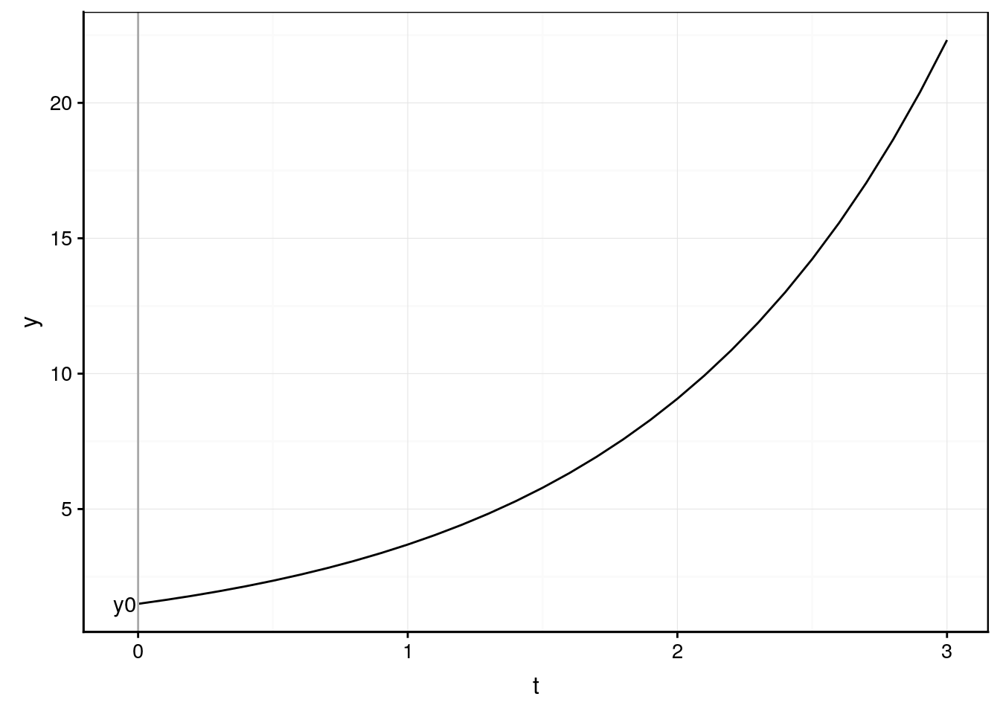
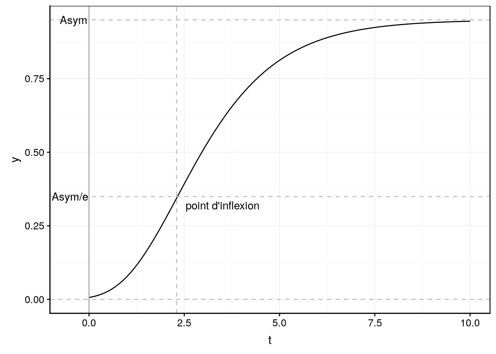
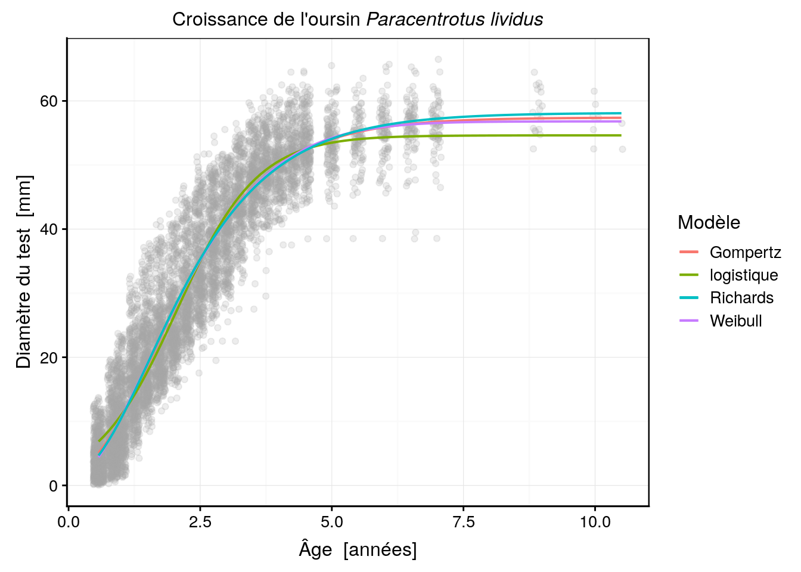
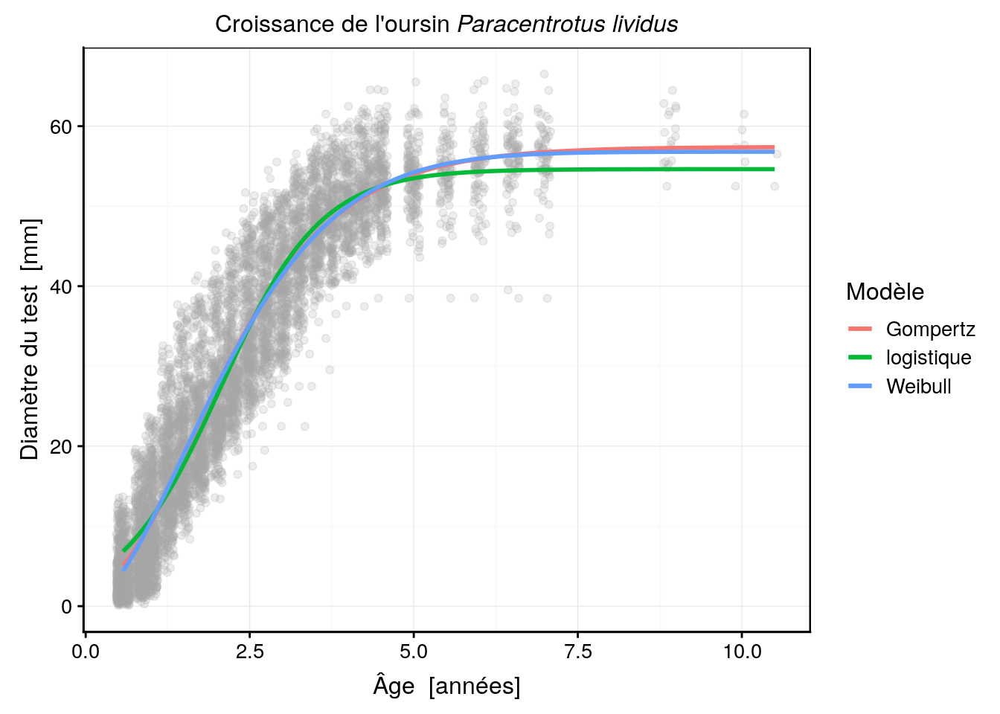
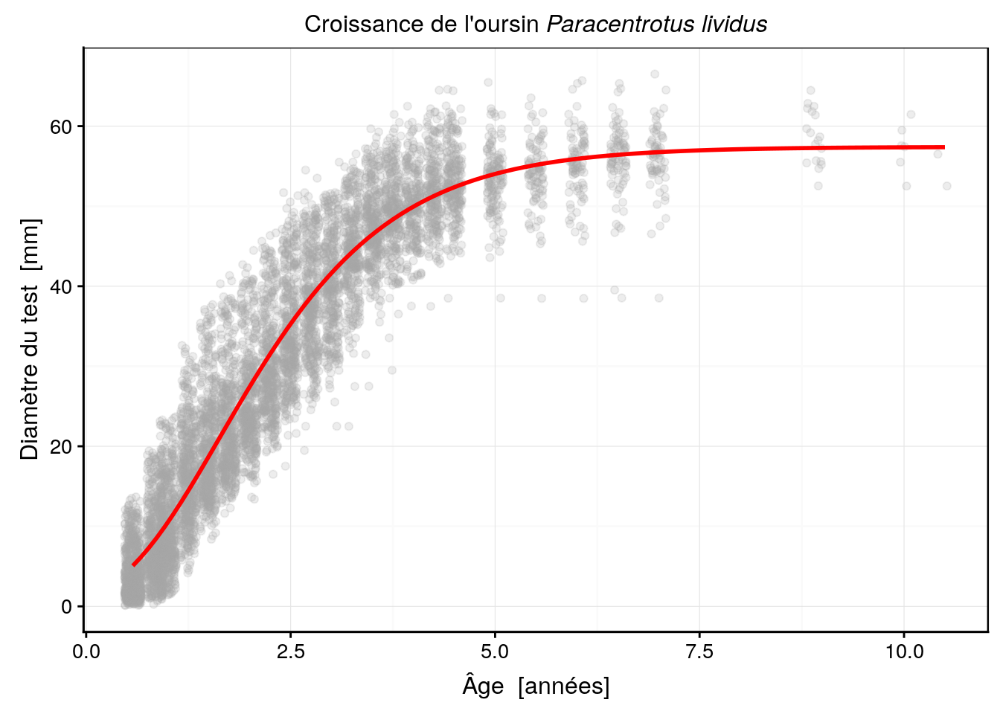
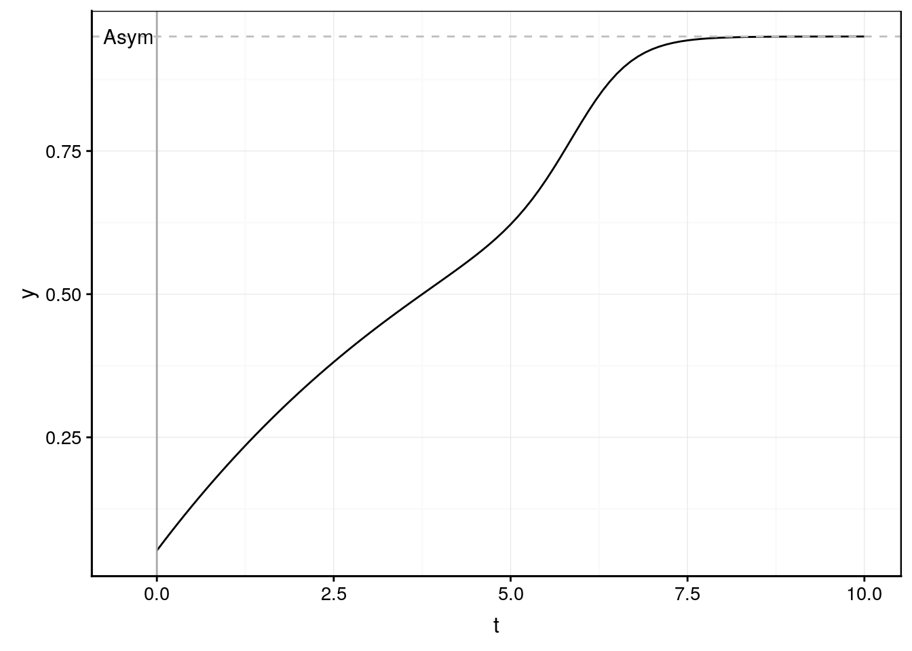
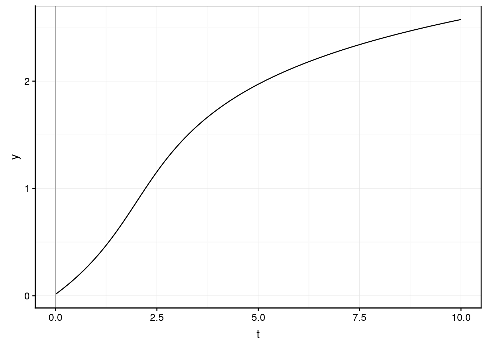

4.3 Modèles courants en biologie
Les domaines les plus courants où des modèles non linéaires sont utilisés en biologie concernent les cinétiques de réactions (chimiques, biochimiques), les courbes de type dose-réponse, les courbes de survie et les modèles de croissance. Nous verrons principalement divers modèles de croissance dans la section suivante. Certains de ces modèles, comme le modèle exponentiel, celui de Gompertz ou de Weibull sont aussi utilisés comme courbes de survie. De plus, la courbe logistique est un modèle classique de type dose-réponse. Ainsi, les différentes courbes de croissances recouvrent également une majorité des modèles utilisés dans d’autres domaines.
4.3.1 Modèle de Michaelis-Menten
La corube de Michaelis-Menten est bien connue pour modéliser des cinétiques chimiques simples, enzymatiques en particulier. Son équation est :
\[V = \frac{V_{max} \cdot conc}{K + conc}\]
où \(conc\) est la concentration des réactifs au début de la réaction, c’est-à-dire, en absence de produits de cette réaction en mol/L, \(V\) est la vitesse de réaction en mol/min. Le modèle a deux paramètres \(V_{max}\) la vitesse maximale asymptotique en mol/min et \(K\) en mol/L correspondant à la concentration telle que la vitesse est la moitié de \(V_{max}\). Dans R, il existe un modèle ‘selfStart’ facile à utiliser pour ajuster une courbe de type Michaelis-Menten. Il s’agit de la fonction SSmicmen().
Voici le graphique d’un modèle Michaelis-Menten avec \(V_{max} = 1\) et \(K = 0,4\). Le trait horizontal en Vm = 1 représente la vitesse maximale possible (asymptote horizontale du modèle). Nous voyons que cette vitesse maximale n’est atteinte que très lentement ici, et il faudrait que l’axe des X s’étende beaucoup plus sur la droite pour l’observer.
micmen_data <- tibble(
conc = seq(0, 10, by = 0.1),
v = SSmicmen(conc, Vm = 1, K = 0.5)
)
chart(data = micmen_data, v ~ conc) +
geom_line() +
xlab("Concentration [mol/L]") +
ylab("Vitesse [mol/min]") +
geom_vline(xintercept = 0, col = "darkgray") +
geom_hline(yintercept = c(0.5, 1), col = "gray", linetype = "dashed") +
geom_vline(xintercept = 0.4, col = "gray", linetype = "dashed") +
annotate("text", label = "Vm", x = -0.4, y = 1) +
annotate("text", label = "Vm/2", x = -0.5, y = 0.5) +
annotate("text", label = "K", x = 0.5, y = 0.03)
A vous de jouer !
Ajuste les pramètres du modèles afin de trouver le meilleur modèle de Michaelis-Menten dans une application interactive “shiny”. Démarrez la SciViews Box et RStudio. Dans la fenêtre Console de RStudio, entrez l’instruction suivante suivie de la touche Entrée pour ouvrir l’application :
BioDataScience2::app("04a_michaelis_menten") # TODOMéthode alternative :
shiny::runApp(system.file("shiny/04a_michaelis_menten", package = "BioDataScience2"))ESC pour reprendre la main dans R lorsque vous aurez fini avec l’application shiny.

04a_michaelis_menten
Concernant les modèles utiles en chimie et biochimie, le modèle à compartiment de premier ordre permet de décrire la cinétique de transformation d’une substance au cours du temps. Voyez le modèle ?Ssfol. Il peut servir par exemple pour déterminer la cinétique d’élimination d’une substance du sang après injection.
4.3.2 Modèles de croissance
Parmi les phénomènes biologiques courants qui sont essentiellement non linéaires, les modèles de croissance occupent une part importante. Il s’agit de phénomènes complexes, résultat d’un ensemble de processus, eux-même très complexes : l’anabolisme, ou élaboration de matière organique et le catabolisme qui la détruit pour la transformer en énergie, en ce qui concerne la croissance somatique individuelle. Un modèle typique de croissance individuelle est le modèle de von Bertalanffy (von Bertalanffy, 1938, 1957).
Il existe un autre type de modèle de croissance : la croissance des populations. Ce type de modèle décrit l’évolution du nombre d’individus dans une population au cours du temps. Dans ce cas particulier, il s’agit également du résultat de plusieurs processus : la natalité, la mortalité et, éventuellement, les migrations. Une courbe type de modèle de croissance de population est la courbe logistique. Un autre modèle couramment utilisé est celui de Weibull pour décrire un nombre décroissant d’individus suite à une mortalité prédominante dans celle-ci.
De nombreux modèles de croissance différents sont disponibles. Certains sont exclusivement des modèles de croissance individuelle, d’autres sont exclusivement des modèles de croissance de populations, mais beaucoup peuvent être utilisés indifféremment dans les deux cas. Tous ont comme particularité d’être l’une ou l’autre forme de modèle exponentiel, exprimant ainsi le fait que la croissance est fondamentalement un processus exponentiel (comprenez que l’augmentation de masse ou du nombre d’individus est proportionnelle à la masse ou au nombre préexistant à chaque incrément temporel).
Nous allons décrire ci-dessous quelques un des modèles de croissance principaux. Ensuite, nous les utiliserons pour ajuster une courbe de croissance dans un jeu de donnée réel.
4.3.3 Courbe exponentielle
En 1798, Thomas Malthus a décrit un modèle de croissance applicable pour décrire la croissance de la population humaine. Cependant, d’après Murray (1993), ce modèle a été suggéré en premier lieu par Euler. Quoi qu’il en soit, ce modèle n’est plus guère utilisé actuellement, mais son importance historique ne doit pas être négligée. Il s’agit, en effet, de la première modélisation mathématique d’une des caractéristiques les plus fondamentales de la croissance : son caractère exponentiel (positive ou négative). Malthus a observé que la population des Etat-Unis double tous les 25 ans. Il suggère alors que les populations humaines augmentent d’une proportion fixe \(r\) sur un intervalle de temps donné, lorsqu’elles ne sont pas affectées de contraintes environnementales ou sociales. Cette proportion \(r\) est par ailleurs indépendante de la taille initiale de la population :
\[y_{t+1} = (1+r) \ y_t = k \ y_t\]
Une forme continue du modèle précédent (intervalle de temps infinitésimal) donne une équation différentielle :
\[\frac{d y(t)}{dt} = y'(t) = k \ y(t)\]
Cette équation différentielle admet la solution suivante :
\[y(t) = y_0 \ e^{k \ t}\]
avec \(y_0\), la taille initiale de la population au temps \(t = 0\). Ce modèle à deux paramètres est également intéressant parce qu’il montre une bonne manière de construire un modèle de croissance. Il suffit de décrire la croissance pour un accroissement infinitésimal de temps par le biais d’une équation différentielle, et ensuite de la résoudre (modélisation dynamique). Presque tous les modèles de croissance existants ont été élaborés de cette manière. Ainsi, la quasi-totalité des modèles de croissance correspondent en fait à une équation différentielle relativement simple.
Dans R, nous pourrons utiliser la fonction suivante :
exponent <- function(x, y0, k)
y0 * exp(k * x)Voici un exemple d’un modèle de croissance exponentiel avec \(y_0 = 1,5\) et \(k = 0,9\). Le paramètre \(y_0\) est indiqué sur le graphique.
# Graphique avec y0 = 1.5 et k = 0.9
exponent_data <- tibble(
t = seq(0, 3, by = 0.1),
y = exponent(t, y0 = 1.5, k = 0.9)
)
chart(data = exponent_data, y ~ t) +
geom_line() +
geom_vline(xintercept = 0, col = "darkgray") +
annotate("text", label = "y0", x = -0.05, y = 1.5)
Il existe aussi un modèle bi-exponentiel qui combine deux signaux exponentiels différents. Pour plus de détails, voyez ?SSbiexp.
A vous de jouer !
Ajuste les pramètres du modèles afin de trouver la meilleure courbe exponentielle dans une application interactive “shiny”. Démarrez la SciViews Box et RStudio. Dans la fenêtre Console de RStudio, entrez l’instruction suivante suivie de la touche Entrée pour ouvrir l’application :
BioDataScience2::app("04b_exponent") # TODOMéthode alternative :
shiny::runApp(system.file("shiny/04b_exponent", package = "BioDataScience2"))ESC pour reprendre la main dans R lorsque vous aurez fini avec l’application shiny.

04b_exponent
4.3.4 Courbe logistique
Le modèle exponentiel décrit une croissance infinie sans aucunes contraintes. Ce n’est pas une hypothèse réaliste. En pratique, la croissance est limitée par les ressources disponibles. Verhulst (1838), en travaillant aussi sur la croissance de populations, propose un modèle qui contient un terme d’auto-limitation \([y_\infty – y (t)] / y_\infty\) qui représente une quelconque limite théorique des ressources disponibles :
\[\frac{dy(t)}{dt} = k \ \frac{y_\infty - y(t)}{y_\infty} \ y(t) = - \frac{k}{y_\infty} \ y(t)^2 + k \ y(t)\]
Lorsque l’on résout et simplifie cette équation différentielle, on obtient :
\[y(t) = \frac{y_\infty}{1 + e^{-k \ (t - t_0)}}\]
Ceci est une des formes de la courbe logistique. Cette fonction a deux asymptotes horizontales en \(y(t) = 0\) et \(y(t) = y_\infty\) (voir schéma ci-dessous) et c’est une sigmoïde symétrique autour du point d’inflexion (les deux courbes du S sont identiques). Le modèle ‘selfStart’ correspondant dans R s’appelle SSlogis(). Ses paramètres sont Asym (= \(y_\infty\)), xmid (= \(t_0\)), et scal (= \(k\)).
Voici le graphique d’une courbe logistique avec \(y_\infty = 0,95\), \(t_0 = 5\) et \(k = 1\).
logis_data <- tibble(
t = seq(0, 10, by = 0.1),
y = SSlogis(t, Asym = 0.95, xmid = 5, scal = 1)
)
chart(data = logis_data, y ~ t) +
geom_line() +
geom_vline(xintercept = 0, col = "darkgray") +
geom_hline(yintercept = c(0, 0.95/2, 0.95), col = "gray", linetype = "dashed") +
geom_vline(xintercept = 5, col = "gray", linetype = "dashed") +
annotate("text", label = "Asym", x = -0.4, y = 0.95) +
annotate("text", label = "Asym/2", x = -0.5, y = 0.95/2) +
annotate("text", label = "xmid", x = 5.4, y = 0.03) +
annotate("text", label = "point d'inflexion", x = 6, y = 0.45)
Cette courbe sigmoïdale est asymptotique en 0 et \(y_\infty\), et elle est également symétrique autour de son point d’inflexion situé à \({t_0, y_\infty / 2}\).
A vous de jouer !
Ajuste les pramètres du modèles afin de trouver la meilleure courbe exponentielle dans une application interactive “shiny”. Démarrez la SciViews Box et RStudio. Dans la fenêtre Console de RStudio, entrez l’instruction suivante suivie de la touche Entrée pour ouvrir l’application :
BioDataScience2::app("04c_logistique") # TODOMéthode alternative :
shiny::runApp(system.file("shiny/04c_logistique", package = "BioDataScience2"))ESC pour reprendre la main dans R lorsque vous aurez fini avec l’application shiny.
04c_logistique
Il est possible de généraliser ce modèle en définissant une courbe logistique dont l’asymptote basse peut se situer n’importe où ailleurs qu’en 0. Si cette asymptote se situe en \(y_0\), nous obtenons l’équation :
\[y(t) = y_0 + \frac{y_\infty - y_0}{1 + e^{-k \ (t - t_0)}}\]
Ceci est le modèle logistique généralisé à quatre paramètres (modèle ‘selfSart’ SSfpl() dans R, pour four-parameters logistic). Les arguments sont A, la première asymptote horizontale (= \(y_0\)), B, la seconde asymptote horizontale (= \(y_\infty\)), xmid (= \(t_0\)) et scal (= \(k\)).
Le graphique ressemble très fort à celui de la fonction logistique, mais la première asymptote n’est plus nécessairement à 0 (ici, \(y_0\) = 0,15).
fpl_data <- tibble(
t = seq(0, 10, by = 0.1),
y = SSfpl(t, A = 0.15, B = 0.95, xmid = 5, scal = 1)
)
chart(data = fpl_data, y ~ t) +
geom_line() +
geom_vline(xintercept = 0, col = "darkgray") +
geom_hline(yintercept = c(0.15, 0.8/2 + 0.15, 0.95), col = "gray", linetype = "dashed") +
geom_vline(xintercept = 5, col = "gray", linetype = "dashed") +
annotate("text", label = "A", x = -0.4, y = 0.15) +
annotate("text", label = "B", x = -0.4, y = 0.95) +
annotate("text", label = "xmid", x = 5.4, y = 0.13) +
annotate("text", label = "point d'inflexion", x = 6.1, y = 0.53)
A vous de jouer !
Ajuste les pramètres du modèles afin de trouver la meilleure courbe exponentielle dans une application interactive “shiny”. Démarrez la SciViews Box et RStudio. Dans la fenêtre Console de RStudio, entrez l’instruction suivante suivie de la touche Entrée pour ouvrir l’application :
BioDataScience2::app("04d_logistique") # TODOMéthode alternative :
shiny::runApp(system.file("shiny/04d_logistique_gen", package = "BioDataScience2"))ESC pour reprendre la main dans R lorsque vous aurez fini avec l’application shiny.
04d_logistique_gen
4.3.5 Modèle de Gompertz
Gompertz (1825) a observé de manière empirique que le taux de survie décroît souvent de manière proportionnelle au logarithme du nombre d’animaux qui survivent. Bien que ce modèle reste utilisé pour décrire des courbes de survie, elle trouve de nombreuses applications pour décrire également des données de croissance. L’équation différentielle du modèle de Gompertz est :
\[\frac{dy(t)}{dt} = k \ [ \ln y_\infty - \ln y(t)] \ y(t)\]
qui se résout et se simplifie en :
\[y(t) = y_\infty \ e^{-k \ (t - t_0)} = y_\infty \ e^{-a \cdot b^t} = y_\infty \ a^{e^{-k \ t}} = y_\infty \ a^{b^t}\]
La dernière forme apparaît plus simple et est le plus souvent utilisée. La première forme est directement dérivée de l’équation différentielle et donne une meilleure comparaison avec la courbe logistique, puisque \(t_0\) correspond aussi à l’abscisse du point d’inflexion, qui n’est plus en position symétrique ici (voir figure ci-dessous). Le modèle ‘selfStart’ correspondant dans R s’appelle SSgompertz(). Sa paramétriqation correspond à la seconde forme, mais avec \(a\) appelé b2 et \(b\) appelé b3 (\(y(t) = Asym \ e^{-b2 \cdot b3^t}\)).
Voici le graphique d’une courbe de Gompertz avec \(y_\infty = 0,95\), \(a = 5\) et \(b = 0,5\).
gomp_data <- tibble(
t = seq(0, 10, by = 0.1),
y = SSgompertz(t, Asym = 0.95, b2 = 5, b3 = 0.5)
)
chart(data = gomp_data, y ~ t) +
geom_line() +
geom_vline(xintercept = 0, col = "darkgray") +
geom_hline(yintercept = c(0, 0.95/exp(1), 0.95), col = "gray", linetype = "dashed") +
geom_vline(xintercept = 2.3, col = "gray", linetype = "dashed") +
annotate("text", label = "Asym", x = -0.4, y = 0.95) +
annotate("text", label = "Asym/e", x = -0.5, y = 0.95/exp(1)) +
annotate("text", label = "point d'inflexion", x = 3.5, y = 0.32)
A vous de jouer !
Ajuste les pramètres du modèles afin de trouver la meilleure courbe exponentielle dans une application interactive “shiny”. Démarrez la SciViews Box et RStudio. Dans la fenêtre Console de RStudio, entrez l’instruction suivante suivie de la touche Entrée pour ouvrir l’application :
BioDataScience2::app("04e_gompertz") # TODOMéthode alternative :
shiny::runApp(system.file("shiny/04e_gompertz", package = "BioDataScience2"))ESC pour reprendre la main dans R lorsque vous aurez fini avec l’application shiny.
04e_gompertz
4.3.6 Modèles de von Bertalanffy
Le modèle de von Bertalanffy, parfois appelé Brody-Bertalanffy (d’après les travaux de von Bertalanffy et Brody) ou modèle de Pütter (dans Ricker, 1979 notamment), est la première courbe de croissance qui a été élaborée spécifiquement pour décrire la croissance somatique individuelle. Il est basé sur une analyse bioénergétique simple. Un individu est vu comme un simple réacteur biochimique dynamique où les entrées (anabolisme) sont en compétition avec les sorties (catabolisme). Le résultat de ces deux flux étant la croissance. L’anabolisme est plus ou moins proportionnel à la respiration et la respiration est proportionnelle à une surface pour beaucoup d’animaux (la surface développée des poumons ou des branchies), soit encore, les 2/3 de la masse. Le catabolisme est toujours proportionnel à la masse. Ces relations mécanistiques sont rassemblées dans l’équation différentielle suivante où \(y(t)\) mesure l’évolution d’un volume ou d’un poids au cours du temps :
\[\frac{dy(t)}{dt} = a \ y(t)^{2/3} - b \ y(t)\]
En résolvant cette équation, nous obtenons le modèle de croissance pondérale de von Bertalanffy :
\[y(t) = y_\infty \ (1 - e^{-k \ (t - t_0)})^3\]
La forme la plus simple de ce modèle est obtenue lorsque nous mesurons des dimensions linéaires pour quantifier la taille de l’organisme, car une dimension linéaire est, en première approximation, la racine cubique d’une masse, proportionnelle au volume à densité constante (sans prendre en compte une possible allométrie). Le modèle de von Bertalanffy pour des mesures linéaires est alors simplement :
\[y(t) = y_\infty \ (1 - e^{-k \ (t - t_0)})\]
Un graphique des deux modèles est présenté ci-dessous. Le modèle de von Bertalanffy pour mesures linéaire n’a pas de point d’inflexion. La croissance est la plus rapide à la naissance et ne fait que diminuer avec le temps pour finalement atteindre zéro lorsque la taille maximale asymptotique est atteinte. Avec ce modèle, la croissance est donc déterminée et elle ne peut dépasser cette asymptote horizontale située en \(y(t)= y_\infty\). A cause de la puissance cubique de la forme pondérale du modèle von Bertalanffy, cette dernière est une sigmoïde asymétrique, comme l’est le modèle de Gompertz également. Trois modèles ‘selfStart’ existent dans R : SSasympOff(), SSasymp() et SSasympOrig().
SSAsympOff()est définie comme \(y(t) = y_\infty \ (1 - e^{-e^{lrc} \ (t - t_0)})\). Ici \(k\) est remplacé par \(e^{lrc}\). Cette astuce permet d’avoir un paramètre \(k\) qui ne prend pas de valeur négatives, puisque l’exponentielle d’une valeur négative est un nombre compris entre 0 et 1. Donc, un \(lrc\) négatif donne un \(k\) compris entre 0 et 1. Cela permet de contraindre un paramètre du modèle sans nécessité de passer obligatoirement par l’algorithme “Port”. A noter finalement que \(y_\infty\) s’appelleAsymdans tous les modèles ‘selfStart’ dans R, y compris ici, et que \(t_0\) s’appelle icic0.SSAsymp()est définie comme \(y(t) = y_\infty + (R_0 - y_\infty) \ e^{-e^{lrc} \cdot t}\). Par rapport à la forme habituelle, outre l’astuce de \(e^{lrc}\) à la place de \(k\), \(t_0\) est également reparamétré en \(R_0\) qui représente la taille initiale au temps \(t = 0\). Cela mets l’accent sur cette “taille à la naissance”.
Reparamétriser un modèle consiste à exprimer la fonction mathématique qui le représente d’une façon différente. Etant donné que l’interprétation biologique des paramètres fait partie des objectifs de la méthode. On parle d’approche mécanistique, qui vise à décrypter le mécanisme sous-jacent versus une approche purement empirique basée sur les données uniquement avec un modèle polynomial tout venant, par exemple.
Ainsi, L’équation du modèle de von Bertalanffy présentée au début montre une paramétrisation “classique”, implémentée dans SSasympOff() alors que SSasymp() mets la taille initiale en évidence via le paramètre \(R_0\).
SSasympOrig()force le modèle à passer par l’origine des axes {0, 0}. Il n’y a donc plus que deux paramètresAsym= \(y_\infty\) etlrctel que \(k = e^{lrc}\). Ce modèle simplifié est souvent utile en pratique. Il a l’avantage d’être simple, avec seulement deux paramètres. Il est l’équivalent d’une droite forcée à zéro pour le modèle von Bertalanffy. SiR0dansSSasymp()ouc0dansSSasympOff()ne sont pas significativement différents de zéro (test t de Student dans le tableau des paramètres), vous pouvez envisager de simplifier le modèle versSSasympOrig().
Le modèle von Bertalanffy en poids n’est pas implémenté, nous devons utiliser une fonction personnalisée dans ce cas (avec une paramétrisation similaire à SSasympOff() :
asympOff3 <- function(x, Asym, lrc, c0, m) Asym*(1 - exp(-exp(lrc) * (x - c0)))^3Voici les deux modèles de von Bertalanffy présentés sur le même graphique avec \(y_\infty\) (alias Asym) = 0,95, lrc = 0,1 et \(t_0\) (alias c0) = 0.
vb_data <- tibble(
t = seq(0, 10, by = 0.1),
y = SSasympOff(t, Asym = 0.95, lrc = 0.1, c0 = 0),
y3 = asympOff3(t, Asym = 0.95, lrc = 0.1, c0 = 0),
)
chart(data = vb_data, y ~ t %col=% "VB en taille") +
geom_line() +
geom_line(f_aes(y3 ~ t %col=% "VB en poids")) +
geom_vline(xintercept = 0, col = "darkgray") +
geom_hline(yintercept = 0.95, col = "gray", linetype = "dashed") +
annotate("text", label = "Asym", x = -0.4, y = 0.95) +
labs(color = "Modèle")
Dans les deux cas l’asymptote représentant la taille maximale possible vaut 0,95. Pour le modèle pondéral, c’est le cube de la valeur obtenue avec SSasympOff() appliquée sur la racine cubique des masses. Dans les deux cas, lrc = 0,1 donc \(k = e^{0,1} = 1,1\) et c0 = 0, la droite passe par l’origine (donc, nous aurions également pu utiliser SSasympOrig() pour générer ces données.
4.3.7 Modèle de Richards
La forme généralisée du modèle de von Bertalanffy est :
\[y(t) = y_\infty \ (1 - e^{-k \ (t - t_0)})^m\]
Von Bertalanffy (1938, 1957) a fixé \(m\) à 1 ou à 3. Richards (1959) permet à \(m\) de varier librement, et donc son modèle a un paramètre de plus. Cette dernière courbe est très flexible (voir schéma ci-dessous) et il est possible de démontrer que plusieurs autres modèles de croissance ne sont que des cas particuliers de ce modèle généraliste avec différentes valeurs de \(m\). Nous avons déjà observé que le modèle de Richards se réduit aux deux modèles de von Bertalanffy quand \(m = 1\) et \(m = 3\). Il se réduit aussi à une courbe logistique lorsque \(m = -1\) et il est possible de montrer qu’il converge vers le modèle de Gompertz lorsque \(|m| \rightarrow \infty\). Il n’existe aucun modèle ‘selfStart’ pour la courbe de Richards dans R. Par ailleurs, il s’agit d’un modèle particulièrement délicat à ajuster, comme nous le verrons dans un exemple concret plus loin dans la section “choix du modèle”.
Avec une paramétrisation proche de celle de SSasympOff(), la fonction de Rcichards peut s’écrire comme ceci :
richards <- function(x, Asym, lrc, c0, m) Asym*(1 - exp(-exp(lrc) * (x - c0)))^mVoici l’allure de différentes courbes de Richards en fonction de la valeur de \(m\) (0,5, 1, 3, 6 et 9) avec \(lrc = 0,1\), \(y_\infty = 0,95\) et \(t_0 = 0\) pour toutes les courbes.
rich_data <- tibble(
t = seq(0, 10, by = 0.1),
y = richards(t, Asym = 0.95, lrc = 0.1, c0 = 0, m = 1),
y05 = richards(t, Asym = 0.95, lrc = 0.1, c0 = 0, m = 0.5),
y3 = richards(t, Asym = 0.95, lrc = 0.1, c0 = 0, m = 3),
y6 = richards(t, Asym = 0.95, lrc = 0.1, c0 = 0, m = 6),
y9 = richards(t, Asym = 0.95, lrc = 0.1, c0 = 0, m = 9)
)
chart(data = rich_data, y ~ t %col=% "m = 1") +
geom_line() +
geom_line(f_aes(y05 ~ t %col=% "m = 0.5")) +
geom_line(f_aes(y3 ~ t %col=% "m = 3")) +
geom_line(f_aes(y6 ~ t %col=% "m = 6")) +
geom_line(f_aes(y9 ~ t %col=% "m = 9")) +
geom_vline(xintercept = 0, col = "darkgray") +
geom_hline(yintercept = 0.95, col = "gray", linetype = "dashed") +
annotate("text", label = "Asym", x = -0.4, y = 0.95) +
labs(color = "Richards avec :")4.3.8 Modèle de Weibull
Depuis son introduction en 1951 par Weibull, ce modèle est présenté comme polyvalent. Il a été décrit à l’origine comme une distribution statistique. Il trouve de nombreuses applications en croissance de population (éventuellement négative), et il est utilisé également pour décrire la courbe de survie en cas de maladie ou dans des études de dynamique de populations. Il a parfois été utilisé comme un modèle de croissance. La forme la plus générale de ce modèle est :
\[y(t) = y_\infty - d \ e^{-k \ t^m}\]
avec \(d = y_\infty - y_0\). Un modèle à trois paramètres est également utilisé où \(y_0 = 0\). La fonction est sigmoïdale lorsque \(m > 1\), sinon elle ne possède pas de point d’inflexion (voir graphique ci-dessous). Dans R, le modèle ‘selfStart’ s’appelle SSweibull(). Comme pour le modèle von Bertalanffy, le paramètre \(k\) est contraint à une valeur positive via l’astuce \(k = e^{lrc}\). Comme d’habitude, \(y_\infty\) se nomme Asym. \(d\) est ici appelé Drop et \(m\) est appelé pwr.
Voici l’allure de différentes courbes de Weibull pour respectivement \(m\) (alias pwr) = 5, 2, 1 et 0,5, avec \(lrc = -0,5\) (donc, \(k = e^{-0,5}\) = 0,61), \(y_\infty\) (alias Asym) = 0,95 et \(y_0= 0,05\), ce qui donne \(d\) (alias Drop) = 0,95 - 0,05 = 0,9. La courbe avec \(m = 1\) est équivalente à un modèle de von Bertalanffy linéaire. Toutes les courbes démarrent en \(y_0\) et passent par \(y_\infty - d \ e^{-k}\) qui est également le point d’inflexion pour les sigmoïdes lorsque \(m > 1\).
weib_data <- tibble(
t = seq(0, 10, by = 0.1),
y = SSweibull(t, Asym = 0.95, Drop = 0.9, lrc = -0.5, pwr = 1),
y05 = SSweibull(t, Asym = 0.95, Drop = 0.9, lrc = -0.5, pwr = 0.5),
y2 = SSweibull(t, Asym = 0.95, Drop = 0.9, lrc = -0.5, pwr = 2),
y5 = SSweibull(t, Asym = 0.95, Drop = 0.9, lrc = -0.5, pwr = 5)
)
chart(data = weib_data, y ~ t %col=% "m = 1") +
geom_line() +
geom_line(f_aes(y05 ~ t %col=% "m = 0.5")) +
geom_line(f_aes(y2 ~ t %col=% "m = 2")) +
geom_line(f_aes(y5 ~ t %col=% "m = 5")) +
geom_vline(xintercept = 0, col = "darkgray") +
geom_hline(yintercept = c(0.05, 0.95, 0.95 - 0.9 * exp(-exp(-0.5))),
col = "gray", linetype = "dashed") +
annotate("text", label = "Asym", x = -0.4, y = 0.95) +
annotate("text", label = "y0", x = -0.4, y = 0.05) +
annotate("text", label = "Asym-d*e^-k", x = 0, y = 0.95 - 0.9 * exp(-exp(-0.5))) +
annotate("text", label = "point d'inflexion si m > 1", x = 3, y = 0.43) +
labs(color = "Weibull avec :")4.3.9 Modèle Preece-Baines 1
Preece et Baines (1978) ont décrit plusieurs modèles spécifiques à la croissance humaine. Ces modèles combinent deux phases de croissance exponentielle pour représenter la croissance graduelle d’enfants suivie par une courte phase de croissance accélérée à l’adolescence, mais qui atteint rapidement un plateau correspondant à la taille adulte définitive (voir graphique ci-dessous). Ce type de modèle est naturellement très utile pour tous les mammifères, mais certains, comme le modèle 1 présenté ici, ont aussi été utilisés dans d’autres circonstances, profitant de sa grande flexibilité. Son équation est :
\[y(t) = y_\infty - \frac{2 (y_\infty - d)}{e^{k1 \ (t - t_0)} + e^{k2 \ (t - t_0)}}\]
Dans R, la fonction à utiliser (avec une paramétrisation similaire à celle des autres modèles ‘selfStart’) est :
preece_baines1 <- function(x, Asym, Drop, lrc1, lrc2, c0)
Asym - (2 * (Asym - Drop)) / (exp(exp(lrc1) * (x - c0)) + exp(exp(lrc2) * (x - c0)))\(k1\) et \(k2\) sont forcés à des valeurs positives ou nulles grace à l’astuce de passer par lrc1 et lrc2. \(d\) est Drop et \(t_0\) est c0.
Ci-dessous un exemple de courbe Preece-Baines 1 avec \(y_\infty\) (alias Asym) = 0,95, \(d\) (alias Drop) = 0,8, \(k1 = 0,19\) (alias lrc1 = log(0,19) = -1,7), \(k2 = 2,5\) (alias lrc2= log(2,5) = 0,92) et \(t_0\) (alias c0) = 6.
pb1_data <- tibble(
t = seq(0, 10, by = 0.1),
y = preece_baines1(t, Asym = 0.95, Drop = 0.8, lrc1 = -1.7, lrc2 = 0.92, c0 = 6)
)
chart(data = pb1_data, y ~ t) +
geom_line() +
geom_vline(xintercept = 0, col = "darkgray") +
geom_hline(yintercept = 0.95, col = "gray", linetype = "dashed") +
annotate("text", label = "Asym", x = -0.4, y = 0.95)
4.3.10 Modèle de Tanaka
Tous les modèles précédents sont asymptotiques, à l’exception de la courbe exponentielle (mais cette dernière ne modélise valablement que la phase de croissance initiale). Tous ces modèles décrivent donc une croissance déterminée qui n’excédera jamais une taille maximale représentée par une asymptote horizontale en \(y(t) = y_\infty\). Knight (1968) s’est demandé s’il s’agit d’une réalité biologique ou simplement d’un artefact mathématique. Dans le second cas, la croissance n’apparaîtrait déterminée que parce que les modèles choisis pour la représenter sont asymptotiques. Pour s’affranchir d’une telle contrainte, Tanaka (1982, 1988) a élaboré un nouveau modèle de croissance qui décrit une croissance non déterminée :
\[y(t) = \frac{1}{\sqrt{b}} \ \ln |2 \ b \ (t - t_0) + 2 \ \sqrt{b^2 \ (t - t_0)^2 + a \ b}| + d\]
Ce modèle complexe à quatre paramètres a une période initiale de croissance lente, suivie d’une période de croissance exponentielle qui se poursuit par une croissance continue mais plus faible tout au long de la vie de l’animal (voir graphique ci-dessous).
Dans R, nous pouvons utiliser la fonction suivante pour ajuster un modèle de Tanaka :
tanaka <- function(x, a, b, c0, d)
1 / sqrt(b) * log(abs(2 * b * (x - c0) + 2 * sqrt(b^2 * (x - c0)^2 + a * b))) + dCi-dessous, un exemple de courbe de Tanaka avec \(a\) = 3, \(b\) = 2,5, \(d\) = -0,2 et \(t_0\) (alias c0) = 2.
tanaka_data <- tibble(
t = seq(0, 10, by = 0.1),
y = tanaka(t, a = 3, b = 2.5, c0 = 2, d = -0.2)
)
chart(data = tanaka_data, y ~ t) +
geom_line() +
geom_vline(xintercept = 0, col = "darkgray")